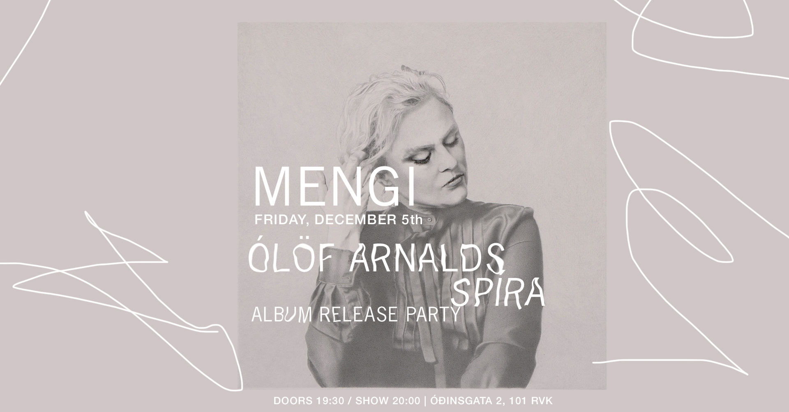
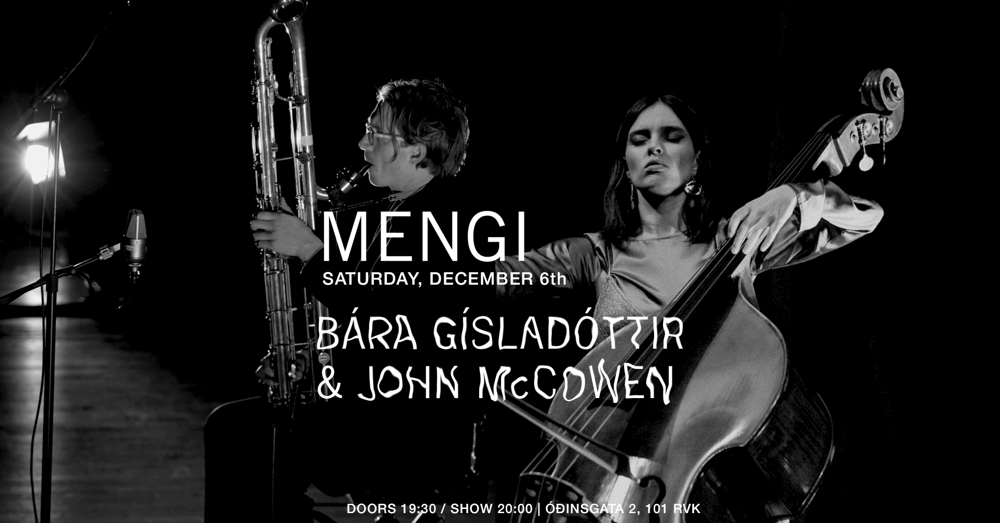
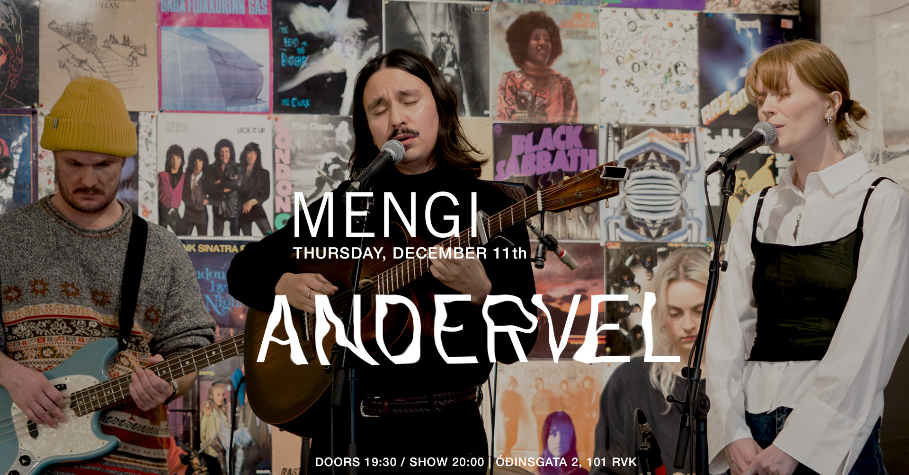
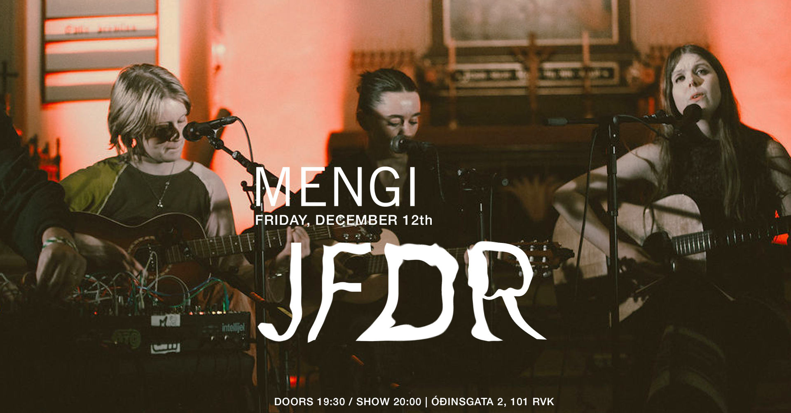
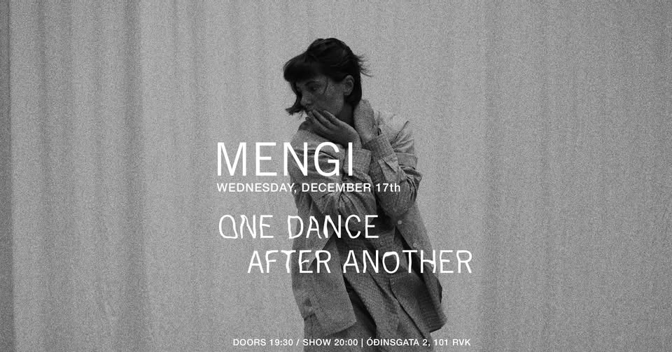

Upcoming Events
FRI 5.12 ÓLÖF ARNALDS' SPÍRA: ALBUM RELEASE PARTY!
(ICELANDIC BELOW) Friday, December 5th doors 19:30 / party 20:00 Listen to the new critically acclaimed album, hear some live music, witness a live conversation about Spíra with Ólöf Arnalds and Elísabet Indra Ragnarsdóttir, and last but not least get some freshly pressed vinyl only available at this event until January 23rd 2026. Spíra is Ólöf's first record for over a decade. The record is all in Icelandic and produced by Skúli Sverrisson. It has gotten great reviews from MOJO, Record Collector Magazine, Uncut and more. Föstudagurinn, 5. desember SPÍRA ÓLAFAR ARNALDS: ÚTGÁFUHÓF húsið opnar 19:30 / partíið hefst 20:00 Hlustað verður á plötuna sem hefur fengið frábæra dóma ytra, Ólöf flytur smá tónlist og Elísabet Indra Ragnarsdóttir tekur viðtal við söngkonuna. Síðast en ekki síst verður hægt að kaupa nýpressaðan vínyl sem annars verður ekki fáanlegur fyrr en 23. janúar 2026. Spíra er fyrsta plata Ólafar í yfir áratug. Hún er öll á íslensku en upptökustjóri er Skúli Sverrisson. Platan hefur fengið frábæra dóma frá m.a. frá MOJO, Record Collector Magazine og Uncut
SAT 6.12 Bára Gísladóttir & John McCowen
Tickets Saturday, December 6th BÁRA GÍSLADÓTTIR & JOHN McCOWEN double bass & contrabass clarinet doors 19:30 / show 20:00 2500kr / 2000kr for students / pay what u can Bára Gísladóttir - double bass John McCowen - contrabass clarinet
THU 11.12 Andervel
Tickets Thursday, December 11th ANDERVEL doors 19:30 / show 20:00 2500kr / 2000kr students / pay what u can Earnest, intimate, heartfelt, delicate: Andervel is the music project of singer-songwriter and multi-instrumentalist José Luis Anderson. Born and raised in Mexico, Anderson creates a unique brand of folk music, seen through the lens of multicultural identity. Andervel's work is defined by a timeless, classically-trained voice and carefully crafted lyrics moving seamlessly between Spanish, Icelandic, and English. On his latest single ‘Ég finn’, Mexican-born, Reykjavík-based artist Andervel continues his poetic exploration of identity, belonging, and cultural adaptation. A tender and expansive folk song, ‘Ég finn’ captures the space between two homelands - where the warmth of Mexico meets the cool, introspective landscapes of Iceland. Andervel performs as a band, joined by Sigurlaug Thorarensen, Sólrún Mjöll Kjartansdóttir and Sakaris Emil Joensen. Links: New single: Ég Finn: http://andervel.lnk.to/EgFinn Instagram: https://www.instagram.com/andervels More: https://linktr.ee/Andervel Website: www.andervel.com
THU 12.12 JFDR
Tickets Friday, December 12th JFDR doors 19:30 / show 20:00 2500kr / 2000kr students / pay what u can i've been working on some new songs over the last year and a half and realised i was mostly working with lots of voices, layered and in harmonies, and the good old guitar. so this fall i reached out to some friends who i knew had beautiful voices but also were interested in playing more guitar and we started meeting up regularly and learn and workshop these new songs together. we had a great time playing them at iceland airwaves a couple of weeks ago and now we're going to bring it to mengi. the players are: áslaug magnúsdóttir, anna róshildur and fríða björg pétursdóttir. JFDR is Jófríður Ákadóttir. As a 14 year old in Reykjavik Ákadóttir began her musical career exploring the vast universe of experimental music while retaining a massive heart at her core. Over the past 12 years Ákadóttir has released 12 records including as a member of Pascal Pinon & Samaris collaborated with renowned artists Ólafur Arnalds and Damien Rice, scored the award-winning Icelandic film Backyard Village and garnered fans across the world – including Björk who cites Ákadóttir as an inspiration. Following 2017’s Brazil (her first record as JFDR), Ákadóttir returned with 2020’s New Dreams “very haunting electro-pop music that’s very subtle very inward looking” (NPR Music) and “the kind of album that might give you space to reach your own small revelations” (Stereogum). Her new album Museum is out now. In March 2024 it won Icelandic album of the year at the Iceland Music Awards.

SAT 13.12 SPACESTATION Jólacoustic tónleikar + Iðunn Einars
Tickets Saturday, December 13th SPACESTATION JÓLATÓNLEIKAR / IÐUNN EINARS doors 19:30 / show 20:00 2.990kr Strákarnir í hljómsveitinni Spacestation hafa farið svaðilför um Íslenska tónlistarsenu seinustu misseri og hafa fest sig í sessi sem eitt öflugasta rokkband hér á landi um þessar mundir. Sveitin gaf út plötuna “Reykjavík Syndrome” fyrr á árinu sem hlaut lof gagnrýnenda og miklar vinsældir. Spacestation hefur einnig verið að gera mjög góða hluti erlendis en seinastliðna mánuði hafa þeir verið á tónleikaferðalagi um Evrópu og spilað í 14 borgum og fengið mjög góðar móttökur. Að loknum túrnum tekur við löngu verðskuldað jólafrí og friður og ró og ætla strákarnir að halda uppá það með þægilegum og kosy jólatónleikum í Mengi þann 13. desember næstkomandi. Seinustu tónleikarnir sem bandið spilar þetta árið! Spacestation spilar indí rokkað post-punk með shoegaze’uðu 60’s rokk ívafi. En lætin fá að víkja í þetta sinn og verður kvöldið með öllu rólegra móti þar sem þetta verða svokallaðir “acoustic” tónleikar, þeir fyrstu sinnar tegundar sem bandið flytur. Ekkert pedala stapp eða feedback suð heldur bara ljúfir strengjaslættir og kertaljós, tími til kominn eftir allann hamagang ársins. Hver veit nema nokkur jólalög komi við sögu? Og jafnvel jólagestur??
FRI 17.12 One Dance After Another - Ásrún Magnúsdóttir
Tickets Wednesday, December 17th ONE DANCE AFTER ANOTHER Ásrún Magnúsdóttir, Ella Eidstad Pedersen, María Kristín Jóhannsdóttir doors 19:30 / show 20:00 2500kr Vikivaki, Macarena, línudans, salsa, WAP, Fortnite, Y.M.C.A og allt þar á milli. Óður til dansanna sem hafa sameinað venjulegt fólk um allan heim í gegnum tíðina, hvort heldur sem er á dansgólfinu, Tiktok eða Popptíví. Hér sameinast dansarnir sem hafa sameinað okkur. Ásrún Magnúsdóttir er hugmyndasmiður verksins. Hún er danshöfundur sem hefur komið víða við. Í verkum sínum fær hún ólíklegasta fólk til að koma fram og teygir þannig út hefðbundnar hugmyndir um dans og kóreógrafíu. Ella Eidstad Pedersen er flytjandi verksins. Hún lauk dansnámi frá Listaháskólanum Í Osló en hefur prófað sitt lítið af hverju: tai chi, hip-hop, söngleikjadans, argentískan tangó, salsa, vouging, locking, halling, amapiano, kung-fu, dabke, hæla, street, rúmba, dancehall og mjög mikið tiktok inn í herbergi í covid. María Kristín Jóhannsdóttir er dj verksins. Hún er dansari og danshöfundur útskrifuð frá Listaháskóla Íslands. Í dansi hefur hún mestan áhuga á að kanna mörk sviðsetningar og veruleika. Þegar hún er ekki að dansa er hún venjulega að dj-a eða að plotta framtíðina. Ljósmynd: Maja Kleveland Straume —— English —— ONE DANCE AFTER ANOTHER Vikivaki, Macarena, line dancing, salsa, WAP, Fortnite, Y.M.C.A and everything in between. An ode to the dances that have united ordinary people around the world throughout history, whether on the dance floor, Tiktok or Popptíví. Ásrún Magnúsdóttir is the creator of the work. Her work aims to stretch the dominant modes of dance and choreography and has been received well at home and abroad. She is interested in amplifying voices that she feels might be heard better; giving the stage to other people to speak up, be seen and listened to. Ella Eidstad Pedersen is the dancer of the work. She studied contemporary dance at Oslo National Academy of the Arts but has done a little bit of everything: tai chi, hip hop, musical dance, Argentinian tango, salsa, voguing, locking, halling, amapiano, kung fu, dabke, heels, commercial street, rumba, dance hall and a lot of tiktok dances in her bedroom during covid. María Kristín Jóhannsdóttir is the dj of the work. She is a dancer and a choreographer graduated from Iceland University of the Arts. Her interest when it comes to dance and performance involves experimenting with the boundaries of performance and reality. When she’s not dancing she is usually DJing or plotting future moves. Photo: Maja Kleveland Straume
SAT 18.12 Bridget Ferrill / Úlfur Hansson
Tickets Thursday, December 18th BRIDGET FERRILL (Berlin, DE) + ÚLFUR HANSSON doors 19:30 / show 20:00 2500kr / 2000kr for students / pay what u can BRIDGET FERRILL Bridget Ferrill is a composer, engineer, and synthesizer builder based in Berlin, Germany. By venturing into the realm of extended instruments, handmade electronics and experimental computer music, she explores the interface between noise and composition. Her solo recorded work has been released on Subtext Recordings and ENXPL. ÚLFUR HANSSON Úlfur Hansson is an Icelandic Brooklyn based solo musician, film composer and sound artist. Recent commissions have included works for the Tectonics festival curated by Ilan Volkov, The Icelandic Symphonic Orchestra, L’Orchestre De Radio France, and the Kronos Quartet. A piece written for an early prototype of the magnetic harp earned him the award of Composer of the Year at the International Rostrum of Composers.